library(tidyverse)
finches <- read_csv("data/finches.csv")
penguins <- read_csv("data/penguins.csv")2 Distributions
TipLearning objectives
- Show how values are spread using histograms, density plots, box plots and violins.
- Explain why a bar chart of means can hide important patterns.
- Choose a distribution plot based on sample size and the number of groups.
Hides the data
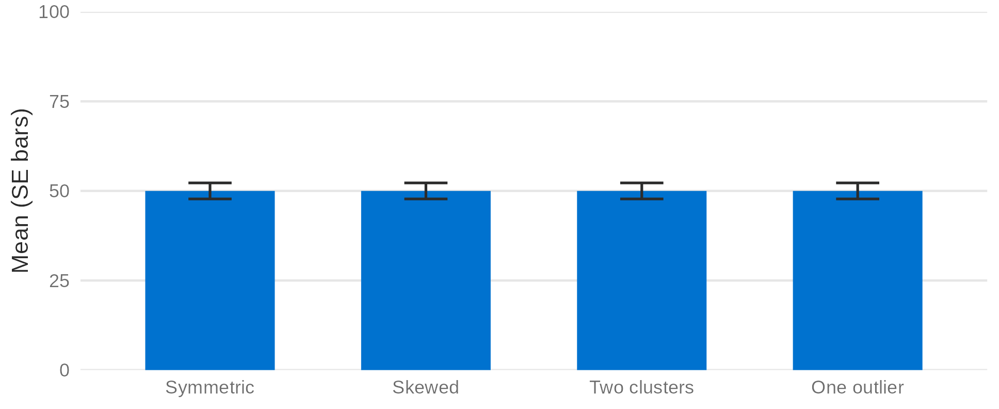
Four groups with identical means and standard errors.Shows the data
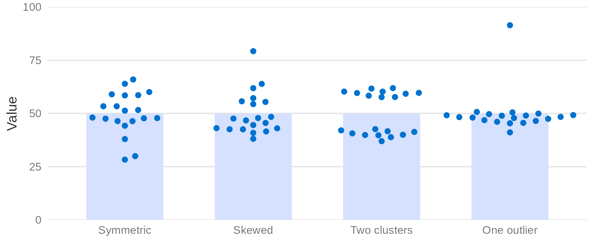
The same four groups: symmetric, skewed, two clusters and one outlier.2.1 Why distributions matter
A mean is one number. It cannot tell you whether values are symmetric or skewed, whether there are clusters, or whether one extreme value is pulling everything along. The two figures above show four groups with the same mean and standard error. As bars they look identical. As dots, they are completely different.
Bar charts of means with error bars are still common for continuous data, despite hiding exactly these patterns (Weissgerber et al. 2015). This chapter shows better options.
2.2 Load packages and data
We use the finches data: beak and body measurements of Darwin’s finches, in four groups defined by when they were sampled (early or late) and beak shape (blunt or pointed).
import pandas as pd
from plotnine import *
finches = pd.read_csv("data/finches.csv")
penguins = pd.read_csv("data/penguins.csv")2.3 One variable: histograms Core
A histogram splits the values into bins and counts how many fall in each.
ggplot(finches, aes(x = bdepth)) +
geom_histogram(binwidth = 0.25, fill = "grey60", colour = "white") +
labs(x = "Beak depth (mm)", y = "Number of finches")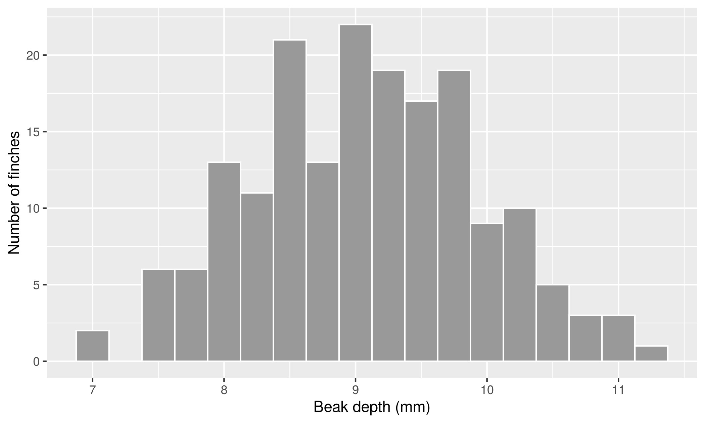
p = (ggplot(finches, aes(x="bdepth"))
+ geom_histogram(binwidth=0.25, fill="grey", color="white")
+ labs(x="Beak depth (mm)", y="Number of finches"))
p.show()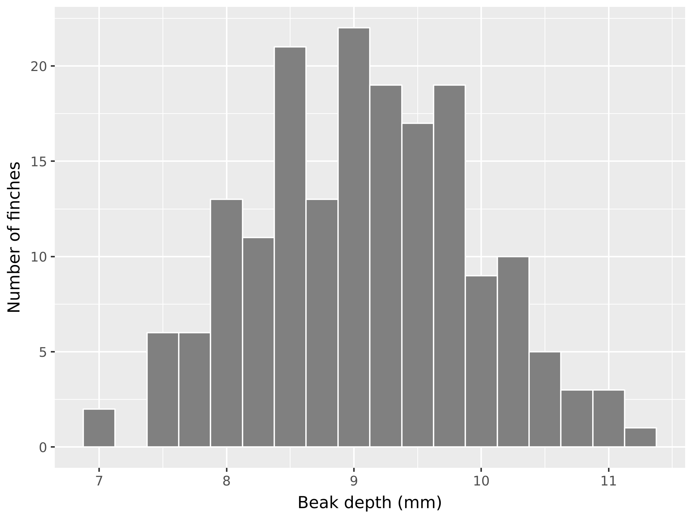
ImportantDesign principle: always choose the bin width
The default number of bins is rarely right. Too few bins hide structure; too many turn the histogram into noise. Try a few values and choose one that matches the precision of your measurements. Here, beak depth is measured to about 0.1 mm, so bins of 0.25 mm are reasonable.
2.4 Comparing groups Core
To compare the four groups, we can split the histogram into panels with facet_wrap(). Putting the panels in one column lines up the x axes, so the shifts between groups are easy to see.
ggplot(finches, aes(x = bdepth)) +
geom_histogram(binwidth = 0.25, fill = "grey60", colour = "white") +
facet_wrap(~ group, ncol = 1) +
labs(x = "Beak depth (mm)", y = "Number of finches")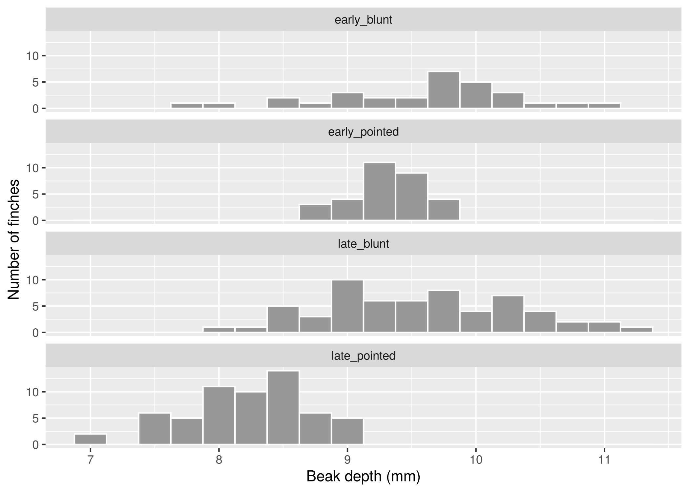
p = (ggplot(finches, aes(x="bdepth"))
+ geom_histogram(binwidth=0.25, fill="grey", color="white")
+ facet_wrap("group", ncol=1)
+ labs(x="Beak depth (mm)", y="Number of finches")
+ theme(figure_size=(7, 5)))
p.show()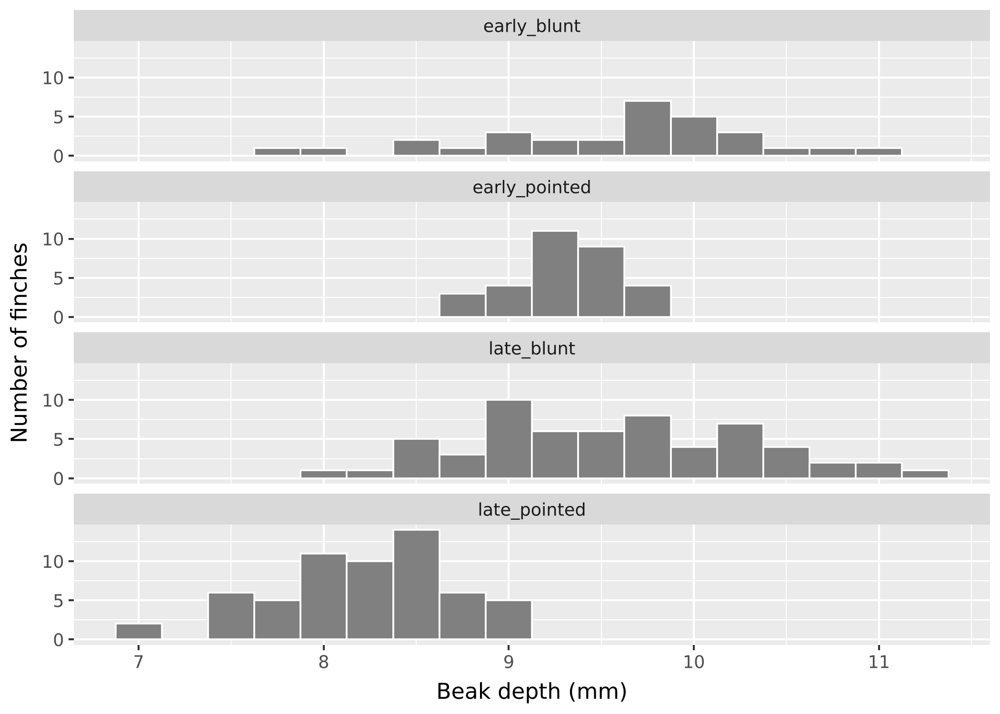
Histograms work well for one to four groups. With more groups, the options below are easier to compare.
2.5 Box plots, violins and points Core
A box plot summarises each group with five numbers: the median (thick line), the middle 50% of values (the box) and the range of typical values (the whiskers), with unusual values drawn as points.
ggplot(finches, aes(x = group, y = bdepth)) +
geom_boxplot() +
labs(x = NULL, y = "Beak depth (mm)")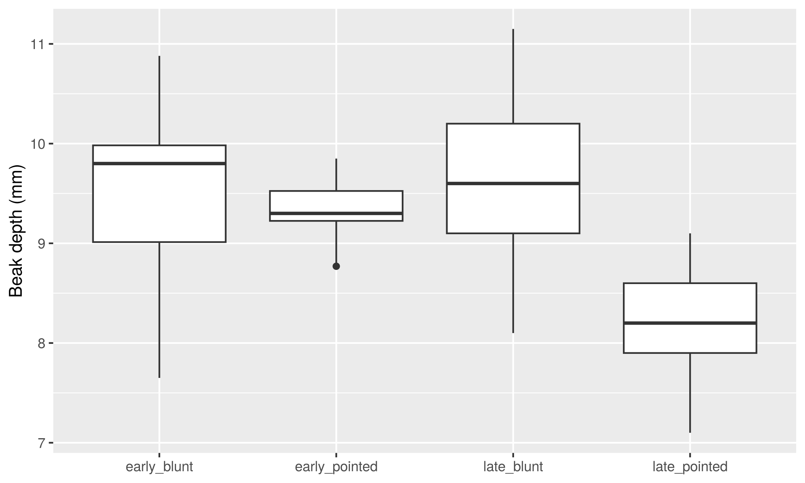
p = (ggplot(finches, aes(x="group", y="bdepth"))
+ geom_boxplot()
+ labs(x="", y="Beak depth (mm)"))
p.show()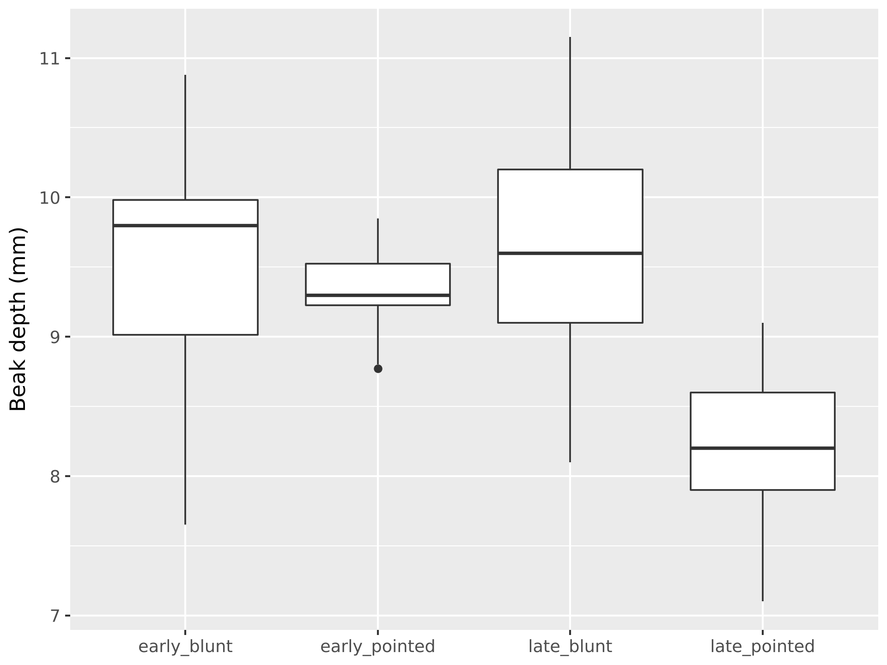
A box plot still hides how many observations there are and how they are spread inside the box. Adding the raw points fixes that. geom_jitter() spreads the points sideways slightly so they do not sit on top of each other.
ggplot(finches, aes(x = group, y = bdepth)) +
geom_boxplot(outlier.shape = NA, width = 0.5) +
geom_jitter(width = 0.15, alpha = 0.5, colour = "#0072CF") +
labs(x = NULL, y = "Beak depth (mm)")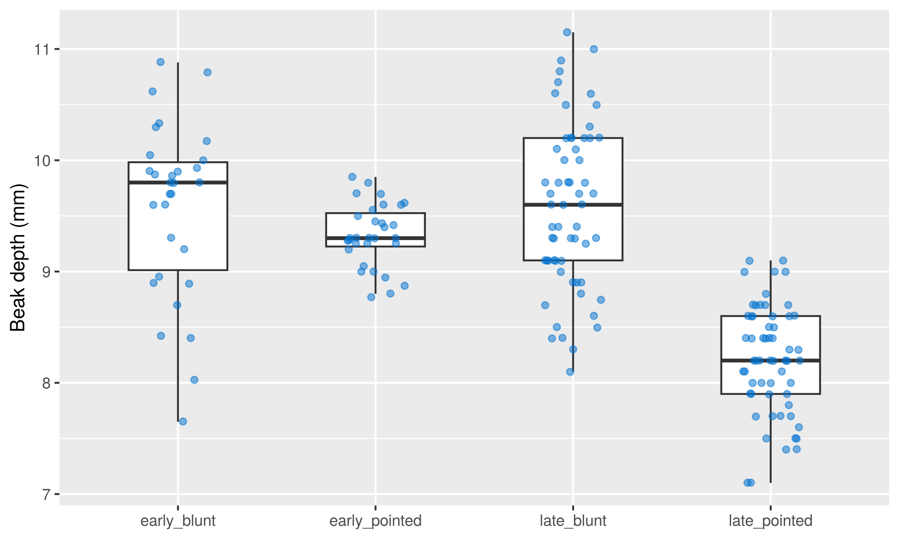
p = (ggplot(finches, aes(x="group", y="bdepth"))
+ geom_boxplot(outlier_shape="", width=0.5)
+ geom_jitter(width=0.15, alpha=0.5, color="#0072CF")
+ labs(x="", y="Beak depth (mm)"))
p.show()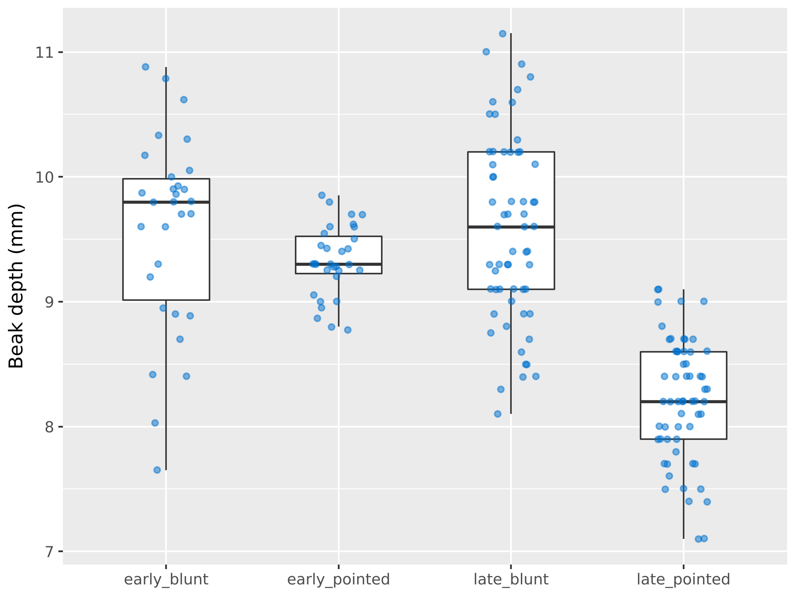
We turned off the box plot’s own outlier points, because the jittered points already show every observation.
A violin plot shows the full shape of each distribution, like a smoothed histogram mirrored on both sides. It is useful for larger samples, where individual points become crowded.
ggplot(penguins, aes(x = species, y = flipper_length_mm)) +
geom_violin(fill = "grey90") +
geom_boxplot(width = 0.1, outlier.shape = NA) +
labs(x = NULL, y = "Flipper length (mm)")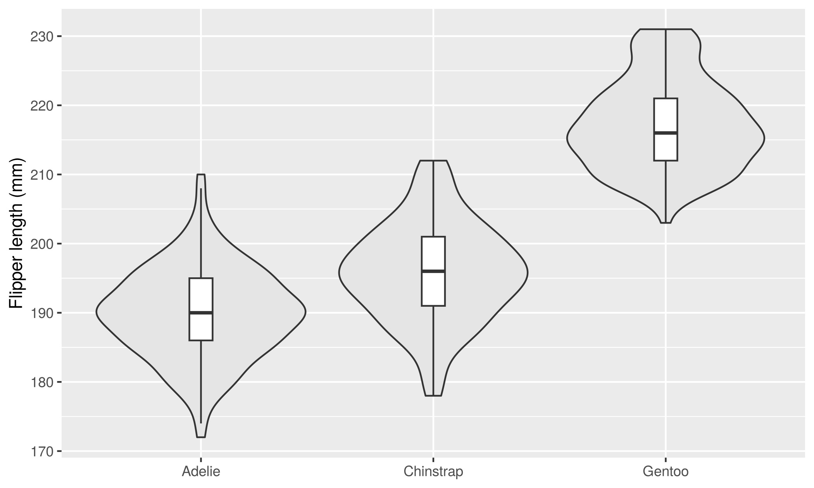
p = (ggplot(penguins, aes(x="species", y="flipper_length_mm"))
+ geom_violin(fill="#E5E5E5")
+ geom_boxplot(width=0.1, outlier_shape="")
+ labs(x="", y="Flipper length (mm)"))
p.show()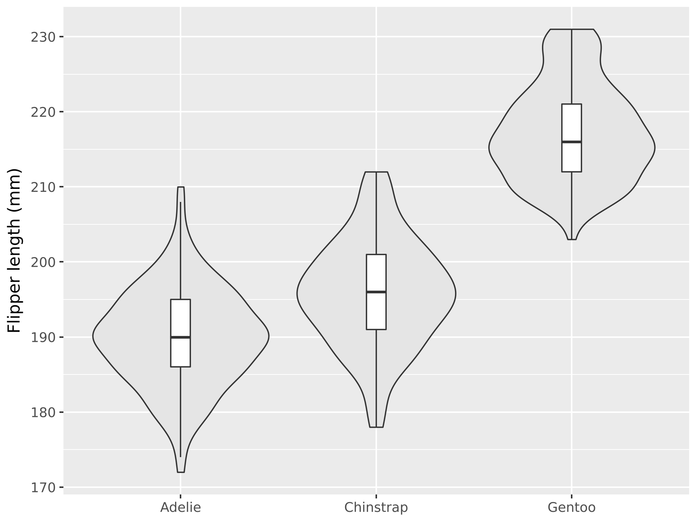
2.6 Which one should I use?
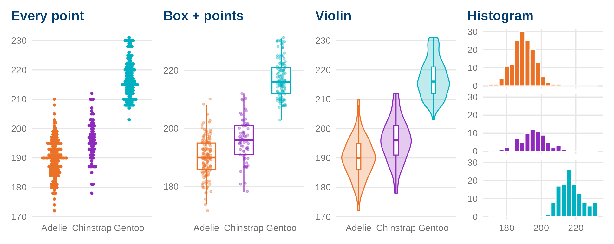
| Situation | Good choice |
|---|---|
| Small samples (up to roughly 30 per group) | Every point, perhaps with a median line |
| Medium samples, several groups | Box plot with points |
| Large samples | Violin or box plot |
| One or two groups, shape matters | Histogram or density plot |
2.7 Show the data, not just the mean Extension
If you need to show a mean and an uncertainty interval, show it on top of the data rather than instead of it. stat_summary() calculates the summary for you.
ggplot(finches, aes(x = group, y = bdepth)) +
geom_jitter(width = 0.15, alpha = 0.4, colour = "grey50") +
stat_summary(fun.data = mean_cl_normal, colour = "#D6083B", size = 0.8) +
labs(x = NULL, y = "Beak depth (mm)",
caption = "Red points: mean with 95% confidence interval")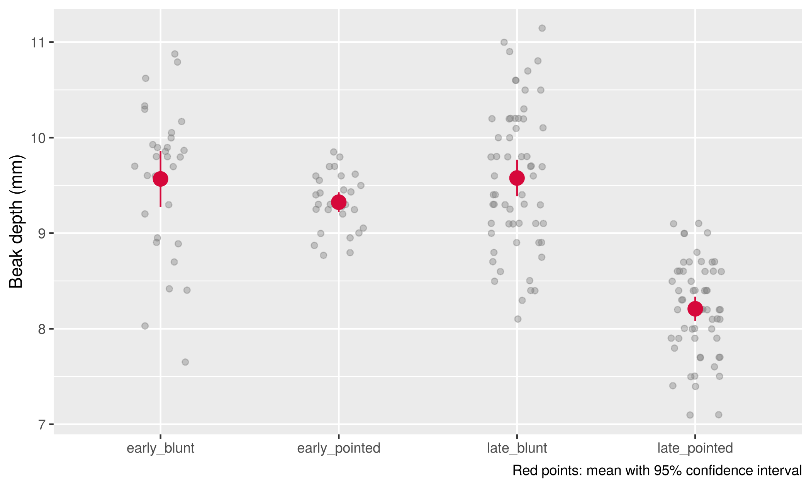
p = (ggplot(finches, aes(x="group", y="bdepth"))
+ geom_jitter(width=0.15, alpha=0.4, color="grey")
+ stat_summary(fun_data="mean_cl_normal", color="#D6083B", size=0.8)
+ labs(x="", y="Beak depth (mm)",
caption="Red points: mean with 95% confidence interval"))
p.show()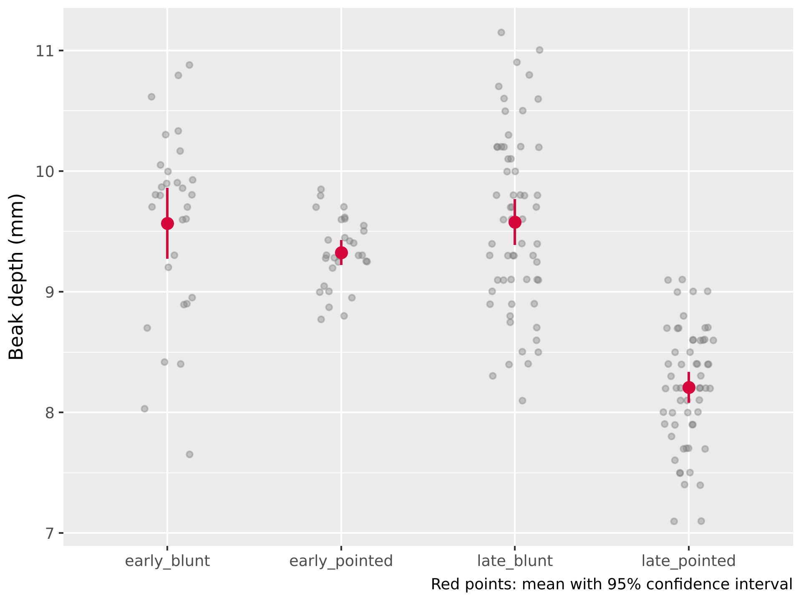
2.8 Exercises
ExerciseBin widths
Level:
Make a histogram of penguin body mass (body_mass_g). Try bin widths of 50, 200 and 1000 grams. Which shows the shape best, and why?
AnswerAnswer
ggplot(penguins, aes(x = body_mass_g)) +
geom_histogram(binwidth = 200, fill = "grey60", colour = "white") +
labs(x = "Body mass (g)", y = "Number of penguins")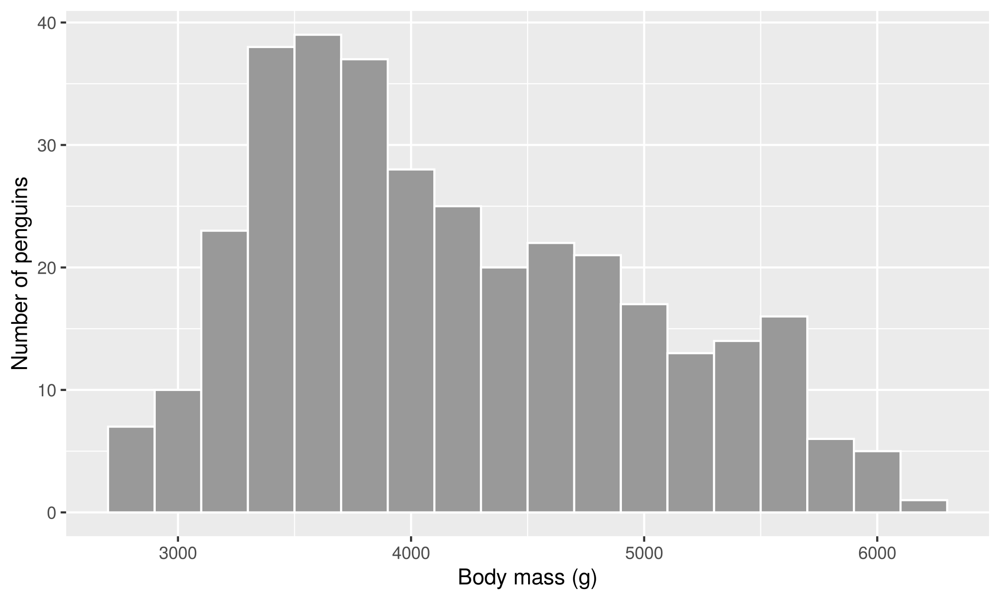
p = (ggplot(penguins, aes(x="body_mass_g"))
+ geom_histogram(binwidth=200, fill="grey", color="white")
+ labs(x="Body mass (g)", y="Number of penguins"))
p.show()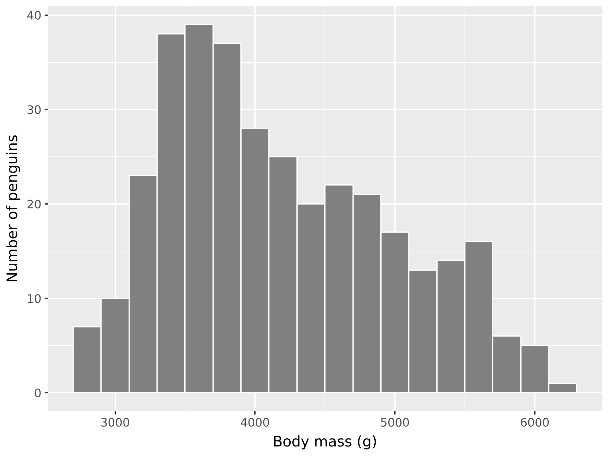
At 50 g the histogram is noisy, and at 1000 g almost everything is in three bars. Around 200 g shows a clear shape, with a hint of two peaks: a clue that there are groups in the data (the species).
ExerciseCompare species
Level:
Compare body mass between the three penguin species using a box plot with jittered points. Colour the points by sex. What do you notice?
AnswerAnswer
penguins |>
drop_na(sex) |>
ggplot(aes(x = species, y = body_mass_g)) +
geom_boxplot(outlier.shape = NA, width = 0.5) +
geom_jitter(aes(colour = sex), width = 0.15, alpha = 0.7) +
labs(x = NULL, y = "Body mass (g)", colour = "Sex")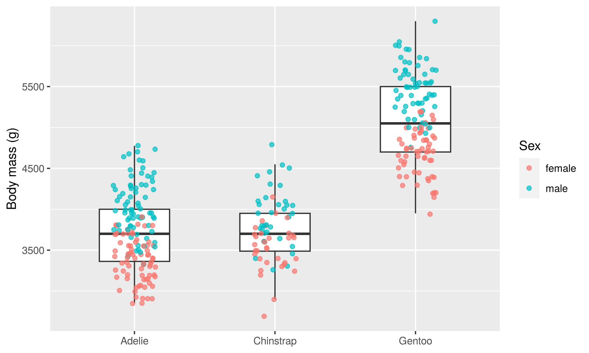
p = (ggplot(penguins.dropna(subset=["sex"]), aes(x="species", y="body_mass_g"))
+ geom_boxplot(outlier_shape="", width=0.5)
+ geom_jitter(aes(color="sex"), width=0.15, alpha=0.7)
+ labs(x="", y="Body mass (g)", color="Sex"))
p.show()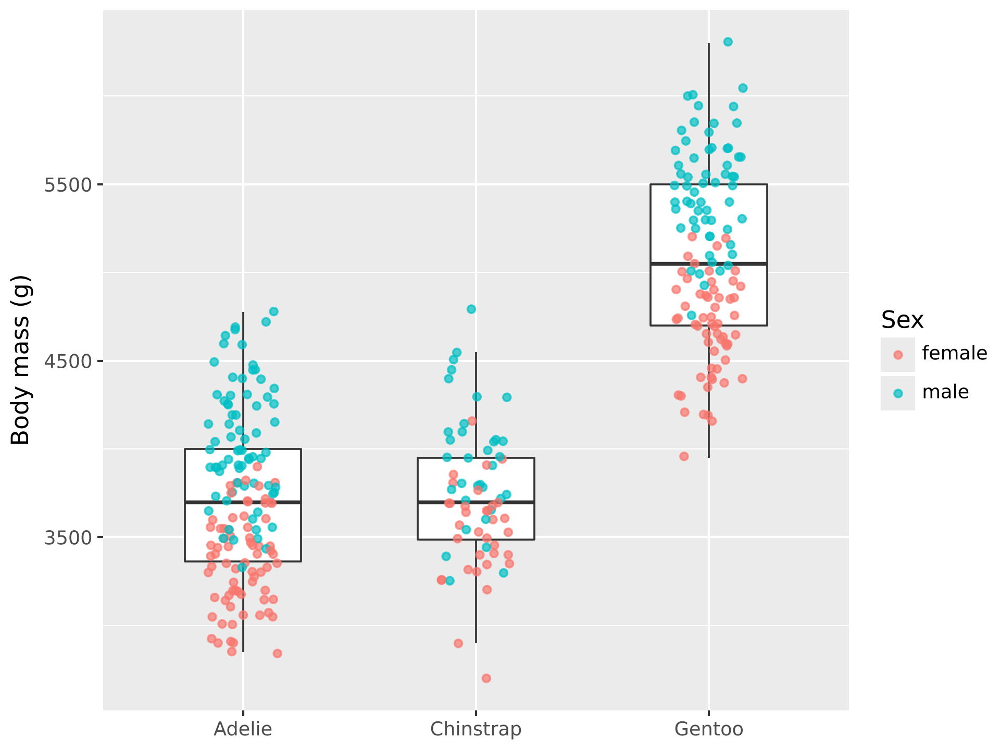
Gentoo penguins are much heavier than the other two species. Within each species, males tend to be heavier than females, which is why some boxes look wide.
ExerciseRemake a dynamite plot Extension
Level:
The code below makes a bar chart of mean flipper length with standard error bars. Remake it so that it shows every observation as well as the mean.
penguins |>
group_by(species) |>
summarise(mean = mean(flipper_length_mm, na.rm = TRUE),
se = sd(flipper_length_mm, na.rm = TRUE) / sqrt(n())) |>
ggplot(aes(x = species, y = mean)) +
geom_col() +
geom_errorbar(aes(ymin = mean - se, ymax = mean + se), width = 0.2)
AnswerAnswer
ggplot(penguins, aes(x = species, y = flipper_length_mm)) +
geom_jitter(width = 0.15, alpha = 0.3) +
stat_summary(fun.data = mean_se, colour = "#D6083B", size = 0.6) +
labs(x = NULL, y = "Flipper length (mm)")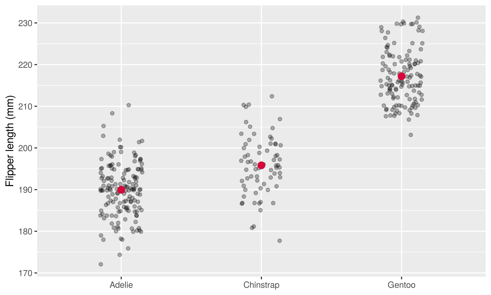
p = (ggplot(penguins, aes(x="species", y="flipper_length_mm"))
+ geom_jitter(width=0.15, alpha=0.3)
+ stat_summary(fun_data="mean_se", color="#D6083B", size=0.6)
+ labs(x="", y="Flipper length (mm)"))
p.show()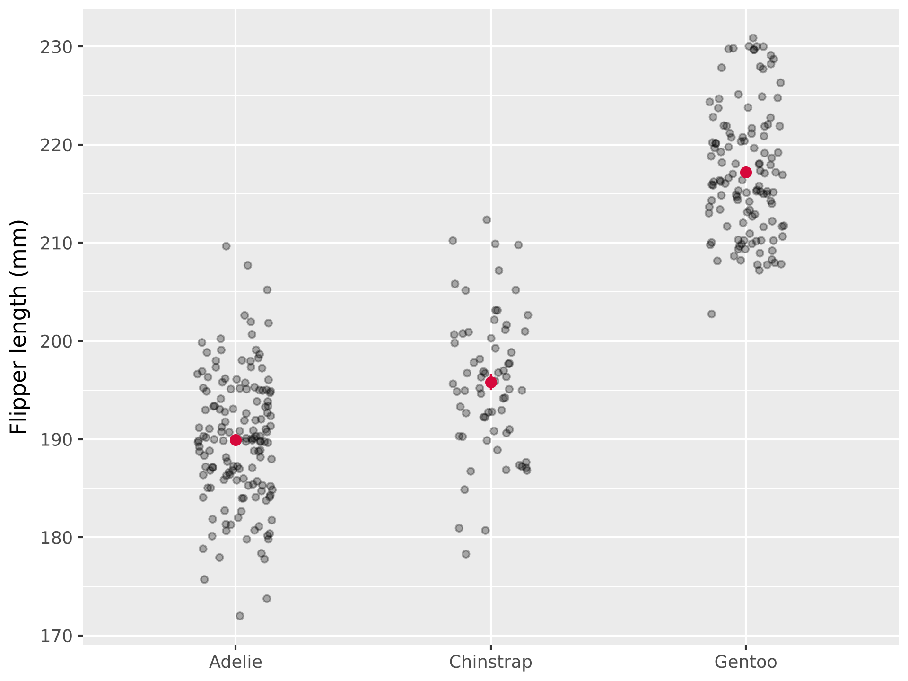
The new version shows the same means, plus the spread, the sample size and any unusual values. Notice that the y axis no longer needs to start at zero, because we are reading positions, not bar lengths.
2.9 Summary
TipKey points
- Means and error bars can hide skew, clusters and outliers. Show the data where you can.
- Histograms need a deliberate bin width.
- Box plots summarise; adding points shows what is underneath.
- Choose the plot by sample size and number of groups.